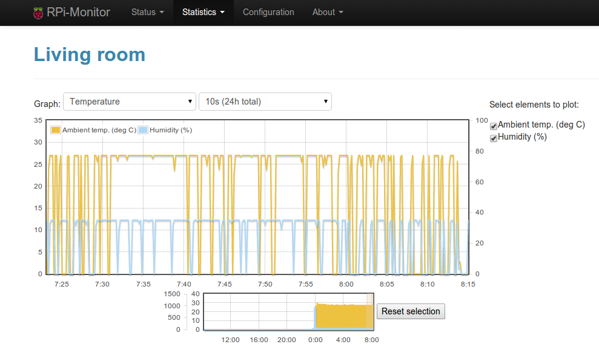

Frequently Asked Questions¶
RPi-Monitor is displaying NaN instead of value in my distro lambda. Can you
fixe this issue?
There are a lot of GNU/Linux distribution available, I can’t support all of them. I dicided since the beginning to Raspbian as target OS. The version v2.13 has been tested on2017-11-29-raspbian-stretch-lite.img. Remember, in RPi-Monitor, everything is configurable. It should then be possible to update configuration files to match the specificities of your distro.
RPi-Monitor’s graphs are not clean and frequently drop down to zero as in screenshot bellow. How can I have a clean curve?
RPi-Monitor is periodically getting data from program of files. If the program is not answering or if the file is empty, the value is unknown. This unknown value will be drawn as a zero in graphs. If, as in the upper example, the program reading the sensor is giving reliable values, it is advised to create a script writing the temperature result into a file and to configure RPi-Monitor to read this file. In this case, if the file is not updated, the previous value will be read and drawn in graphs.
{kind=link}
- RPi-Monitor’s web interface is not working, I’ve only white pages?
- RPi-Monitor requires HTML5 local storage and cookies to work properly. You should check that these both functionalities are activated into your browser and check that no plug-ins is blocking them.
- Is RPi-Monitor supporting distribution XXX?
- Can you make RPi-Monitor compatible with distribution XXX?
- RPi-Monitor was developed on Raspbian. This distribution is then fully supported.
- I will not officially support any other distribution but you will find in github repository some configuration files that may help you to configure RPi-Monitor on your system. Remember, RPi-Monitor is highly configurable and should be able to run on every system able to run perl. Have a look to RPi-Monitor articles for examples.
- I have a problems running rpimonitord: failed “Can’t locate _______.pm in @INC ...
- The installation is not done properly. You should read again the installation procedure and pay attention to the dependencies.
- I would like to use my favorite web server instead of the one embedded into RPi-Monitor. Is it possible?
- Yes, this is possible but not recommended. RPi-Monitor embedded web server is optimized to reduce the usage of the SDCard, reduce the resources used into the system. The Web interface is requiring some specific feature that can only be delivered by RPi-Monitor embedded web server (like empty.rrd file generation ensuring a clean display of graphs).
- Can you add login/password and authentication to RPI-Monitor web interface?
- No. I’ll never add such a feature to RPi-Monitor. Why? Just because it is something complex to do in a clean and fully secured way. Some software are already design to do the job and they do it well. Refer to this article if you need such a feature.
- How can I do customize RPi-Monitor, change data extracted, add images, change texts...
- In RPi-Monitor almost everything is configurable. This can be done by configuration file. Have a look to RPi-Monitor articles for examples.
- I tried to install RPi-Monitor into an OS not officially supported and some data are missing. How can I fix it?
- As I said previously, in RPi-Monitor almost everything is configurable. You should find the command to execute or the file to read to get the missing value directly in the shell. Once the command is found you will need to update the configuration file. Have a look to RPi-Monitor articles for examples (have a look to the command rpimonitord -i).
- I would like to monitor a cluster of raspberries with your tool. Is there a way to gather the whole data in one node?
- It could have any answer to such a question. One possibility would be to use ssh and configure RPi-Monitor to execute commands on ech remote nodes of your cluster and process the data locally. To do so, you should create one configuration file per node to monitor and use all of them in RPi-Monitor. Using pages feature could be very usefull. You can use the main page to display some consolidate data in addition to one page per cluster. This question is interresting and I’ll think about writing one article about this subjet.
- I found a bug into RPi-Monitor. How can I share my discovery?
- You should open an issue in github and describe you problem and how to reproduce it.
- Download bandwidth is shown as negative values. It’s bug or feature?
- This is a feature :-). But, remember, everything is customizable in RPI-Monitor...
- I want to create a package for my favorite distribution which is not supported by defalut. How can I contribute to this project?
- RPi-Monitor source code is hosted in github. The file PACKAGING.md should catch your interest.
- I’ve some issue with my installation or customization of RPi-Monitor and I want to reinstall it from scratch. How can I do it?
Here is the instruction to reinstall RPi-Monitor from scratch: First, uninstall RPi-Monitor with the following command:
apt-get purge rpimonitor rm -fr /etc/rpimonitor rm -fr /usr/share/rpimonitor
Then reinstall by following the instruction gathered in this page.
- Some data are not extracting correctly at boot but when I restart rpimonotird everything becomes OK until I reboot. How can I fix thi issue?
- If you reach such situation, you certainly configure your source using a
command whitout the full path. For example
gettemp.shinstead of/usr/bin/gettemp.sh.The first command is working in your shell because the variable $PATH is set and the executable is reachable (that why it work when you restart rpimonitord). When you start your computer, the $PATH variable is not set sogettemp.shwill not work. The solution is to use the full path command/usr/bin/gettemp.sh - I just update my distribution and RPi-Monitor is still saying that packages required to be updated. Why?
- Every night at 3h10, a script is executed to update the package update
information displayed in RPi-Monitor. If you want to update this information
immediately, you can execute this script manually:
/usr/share/rpimonitor/scripts/updatePackagesStatus.pl - I required better resolutions of the reading provided by the RPI monitor. Can we increase the frequency with which the RPI monitor collects the data?
- Yes, since version 2.11, it is possible to define the RRD structure per data extracted. Refer to documentation and man page to know how use this advanced feature.